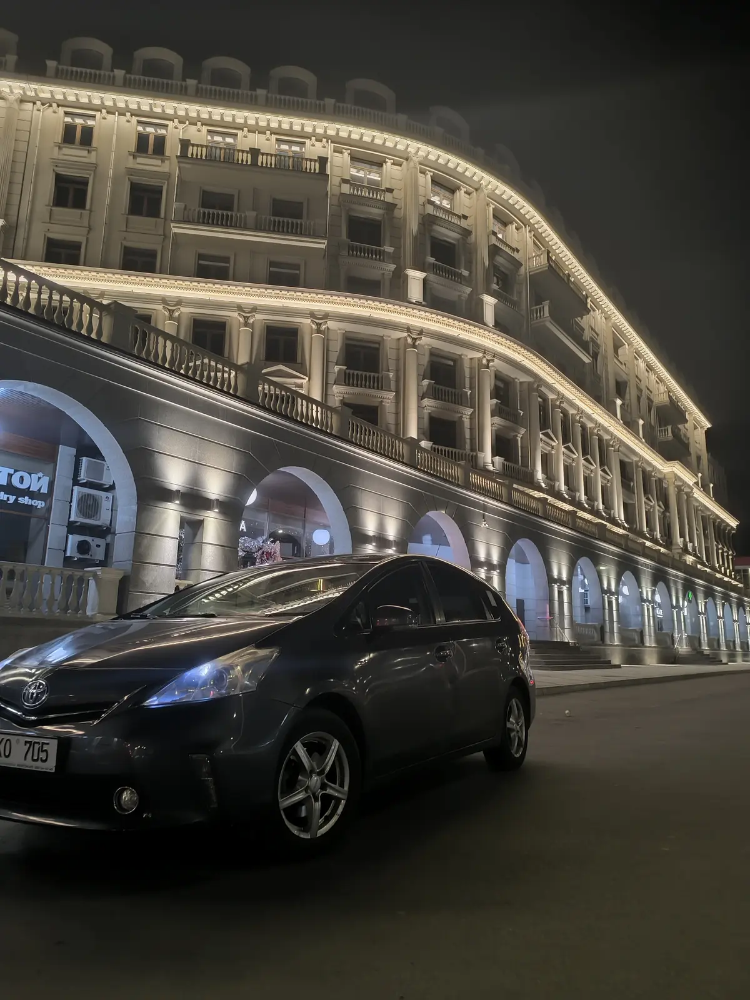

ТРАНСФЕР ИЗ ТИРАСПОЛЯ
В АЭРОПОРТ И ОБРАТНО
Подаём автомобиль к согласованному времени, помогаем с багажом и доставляем к терминалу. При встрече после прилёта остаёмся на связи и довозим до вашего адреса.
К вылету вовремя
Заранее рассчитываем время выезда с учётом маршрута и регистрации на рейс.
Встреча после прилёта
Поддерживаем связь после посадки самолёта и объясняем место встречи.
Багаж от двери до двери
Помогаем с чемоданами при посадке и по прибытии.
Фиксированная цена
Стоимость поездки согласовывается заранее без неожиданных доплат.

В АЭРОПОРТ КИШИНЁВА ИЗ ТИРАСПОЛЯ И ОБРАТНО
ASM Transfer выполняет адресные поездки из Тирасполя к терминалу аэропорта Кишинёва. Заказ оформляется заранее: сообщите дату, номер рейса, время вылета, адрес подачи, количество пассажиров и багажа. Мы поможем выбрать время отправления, чтобы оставить запас на дорогу и регистрацию.
При встрече после прилёта водитель остаётся на связи по телефону или в мессенджере. После получения багажа согласуем точку встречи и доставим пассажиров прямо по адресу в Тирасполе. Это особенно удобно ночью, с детьми или с несколькими чемоданами.
Стоимость подтверждается до поездки. Если рейс перенесли, сообщите новое время — мы проверим возможность скорректировать подачу. Детское кресло предоставляется по предварительному запросу.
ТРИ ШАГА ДО ПОЕЗДКИ
Бронь по рейсу
Передайте дату, номер рейса и контакт пассажира.
Подача к адресу
Заберём в Тирасполе в согласованное время и поможем с багажом.
Поездка без пересадок
Доставим к терминалу или встретим в аэропорту для обратного маршрута.
ОТВЕТЫ ПЕРЕД БРОНИРОВАНИЕМ
Как заказать встречу в аэропорту?
Пришлите номер рейса, дату прилёта, имя пассажира и номер для связи.
Работаете ли рано утром и ночью?
Да, трансферы доступны 24/7 по предварительной брони.
Есть ли помощь с багажом?
Да, водитель поможет загрузить и выгрузить чемоданы.
Когда называется цена?
После получения деталей маршрута, до подтверждения заказа и выезда.
ПОПУЛЯРНЫЕ МАРШРУТЫ ASM TRANSFER
СООБЩИТЕ РЕЙС,
ДАТУ И ВРЕМЯ
Ответим и заранее подтвердим стоимость поездки.